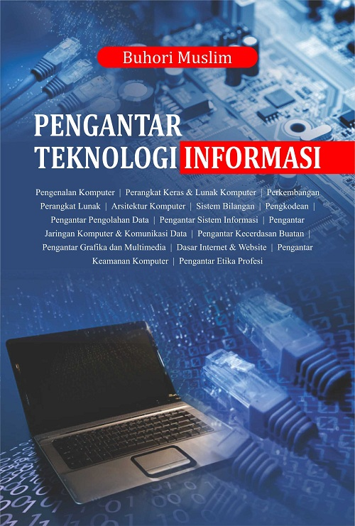

|  | Pengarang : By Buhori Muslim |
| Year: 2017 | |
| Pages: 392 | |
| ISBN : 978-602-453-242-0 | |
Pengatar Teknologi Informasi ini merupakan mata kuliah yang biasanya di adakan di tahun-tahun awal perkuliahan pada jurusan yang ada hubungannya tengan elektronika, komputer, informatika, sistem informasi kesehatan, teknologi informasi dan lain-lain, Pengantar Teknologi Informasi ini hampir bisa di katakana sebagai Mata Kuliah Pembuka untuk mata kuliah yang lain, seperti: Organisasi Komputer, Arsitektur Komputer, Maintenance, Sistem operasi, Keamanan, Internet, jaringan dan lain-lain sehingga bagi penulis merupakan tantangan yang luar biasa, karena buku referensi ini harus jadi jalan awal untuk memahami Mata Kuliah selanjutnya.
Ide penulisan buku ini sebenarnya sudah ada sejak penulis menempuh kuliah strata 1 (S1) sehingga salah satu literature (bahan bacaan) penulis merupakan rangkuman kuliah, yang terus di sempurnakan menjadi bahan ajar (modul, power point), artikel, dan jurnal pada saat penulis mengajar, dan di sempurnakan lagi menjadi buku ini. Penulis berpendapat dengan panjangnya masa penulisan, dan terus menerus mengalami perbaikan, di yakini akan mampu mengawali (deskripsi awal) untuk Mata Kuliah selanjutnya.